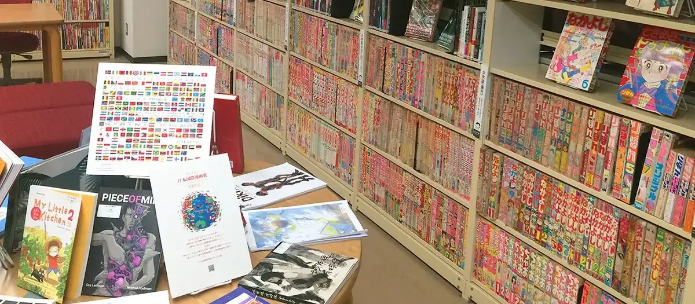
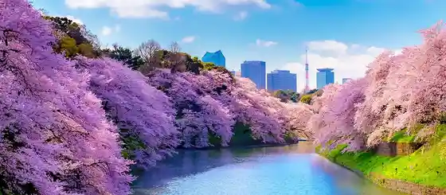
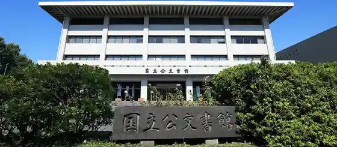
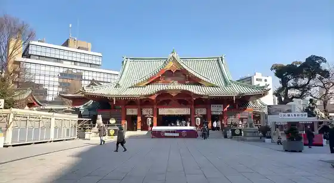

Chiyodaku, Tokyo: things to do, food and stays
Chiyodaku · Tokyo
Chiyodaku
Highlighted on the Tokyo map.

Sights
Meijidaigaku Yonezawa Yoshihiro Kinen Library Gendai Manga Library
Imperial Theatre
Chidorigafuchi Greenway

National Archives of Japan

Kanda Myojin (Raburaibu ! Nado)

Kanda Myojin
Mitsubishi Ichigokan Art Museum
Tokyo Shiteiai Kanko Bijinesu Joho Center
Yuraku Town Marion
Showa Kan
Kita no Maru Park
Daimarutokyoten
Shugiin Kensei Memorial Museum
Kokkaigijido (Sangiin)
Dining
CHIUnE

European restaurant in Chiyodaku, Tokyo.
SEZANNE

European restaurant in Chiyodaku, Tokyo.
Les Saisons
レ セゾン

European restaurant in Chiyodaku, Tokyo.
Apishiusu
アピシウス

European restaurant in Chiyodaku, Tokyo.
Sushi Mizukami
鮨 みずかみ

Seafood restaurant in Chiyodaku, Tokyo.
Ryugin
龍吟

Japanese restaurant in Chiyodaku, Tokyo.
Asuka Kura Ta
飛鳥くら田

Meat restaurant in Chiyodaku, Tokyo.
Biryani Osawa
ビリヤニ大澤

Chinese or Asian restaurant in Chiyodaku, Tokyo.
Tinc gana Reservation
Tinc gana

European restaurant in Chiyodaku, Tokyo.
L'ARGENT Reservation
ラルジャン

European restaurant in Chiyodaku, Tokyo.
TOUR D'ARGENT Toukyou
トゥールダルジャン 東京

European restaurant in Chiyodaku, Tokyo.
ESTERRE
フランス料理 エステール by アラン・デュカス

European restaurant in Chiyodaku, Tokyo.
naoto.K Reservation
naoto.K

European restaurant in Chiyodaku, Tokyo.
CHOCOLATIER PALET D’OR Tokyo
ショコラティエ パレ ド オール 東京

Cafe in Chiyodaku, Tokyo.
VIRON Marunouchi ten
VIRON 丸の内店

Cafe in Chiyodaku, Tokyo.
Tokyo Style Noodle Hotate Biyori
Tokyo Style Noodle ほたて日和

Noodle restaurant in Chiyodaku, Tokyo.
TAKEUCHI Chiyoda kanda jinbou honten
タケウチ 神保町本店

European restaurant in Chiyodaku, Tokyo.
KHAO

Chinese or Asian restaurant in Chiyodaku, Tokyo.
La Maison du Chocolat Marunouchi ten
ラ･メゾン･デュ･ショコラ 丸の内店

Cafe in Chiyodaku, Tokyo.
TORAYA TOKYO
トラヤ トウキョウ

Cafe in Chiyodaku, Tokyo.
KAMAYOSHI
麺匠 釜善

Noodle restaurant in Chiyodaku, Tokyo.
Le Petitmec HIBIYA Hibiya ten
ル・プチメック 日比谷店

Cafe in Chiyodaku, Tokyo.
Okashi Dokoro Sasama
御菓子処 さゝま

Sweets and bakery shop in Chiyodaku, Tokyo.
China Hanten Kohaku Kyu
中国飯店 琥珀宮

Chinese or Asian restaurant in Chiyodaku, Tokyo.
Tatsumi Reservation
天麩羅 巽

Seafood restaurant in Chiyodaku, Tokyo.
Mendokoro Honda Akihabara honten
麺処 ほん田 秋葉原本店

Noodle restaurant in Chiyodaku, Tokyo.
ALTER EGO

European restaurant in Chiyodaku, Tokyo.
Old Imperial Bar
オールドインペリアル バー

Izakaya or bar in Chiyodaku, Tokyo.
Topca Kanda honten
トプカ 神田本店

Chinese or Asian restaurant in Chiyodaku, Tokyo.
Echire Maison du Beurre
エシレ・メゾン デュ ブール

Sweets and bakery shop in Chiyodaku, Tokyo.
CHANTOYA COCONUT CURRY
チャントーヤ ココナッツカリー

Japanese restaurant in Chiyodaku, Tokyo.
Tsukesoba Kanda Katsumoto
つけそば 神田 勝本

Noodle restaurant in Chiyodaku, Tokyo.
La Boutique de Joël Robuchon Marunouchi burikkusukuea ten
ラ ブティック ドゥ ジョエル・ロブション 丸の内ブリックスクエア店

Cafe in Chiyodaku, Tokyo.
Patisserie Satsuki
パティスリー SATSUKI

Sweets and bakery shop in Chiyodaku, Tokyo.
The Peninsula Boutique & Cafe
ザ・ペニンシュラ ブティック＆カフェ

Cafe in Chiyodaku, Tokyo.
Le Grenier à Pan Koujimachi ten
ル・グルニエ・ア・パン 麹町店

Sweets and bakery shop in Chiyodaku, Tokyo.
Stay
Hotel Metropolitan Edmont Tokyo
ホテルメトロポリタン エドモント

Hotel Metropolitan Edmont Tokyo is a hotel in Chiyodaku, Tokyo.
Hotel Niwa Tokyo
庭のホテル 東京

Hotel Niwa Tokyo is a hotel in Chiyodaku, Tokyo.
Hotel Monterey Hanzomon
ホテルモントレ半蔵門

Hotel Monterey Hanzomon is a hotel in Chiyodaku, Tokyo.
Tokyo Kojimachi Tokyu REI Hotel
東京麹町東急REIホテル（旧 東京グリーンパレス）

Tokyo Kojimachi Tokyu REI Hotel is a hotel in Chiyodaku, Tokyo.
Tokyu Stay Suidobashi
東急ステイ水道橋

Tokyu Stay Suidobashi is a place to stay in Chiyodaku, Tokyo.
the b ochanomizu
the b お茶の水

the b ochanomizu is a place to stay in Chiyodaku, Tokyo.
Ochanomizu Hotel Shoryukan
お茶の水ホテル昇龍館

Ochanomizu Hotel Shoryukan is a hotel in Chiyodaku, Tokyo.
Hotel MyStays Ochanomizu Conference Center
ホテルマイステイズ御茶ノ水 コンファレンスセンター

Hotel MyStays Ochanomizu Conference Center is a hotel in Chiyodaku, Tokyo.
APA Hotel 〈Kanda Jimbocho Eki Higashi〉
アパホテル〈神田神保町駅東〉

APA Hotel 〈Kanda Jimbocho Eki Higashi〉 is a hotel in Chiyodaku, Tokyo.
APA Hotel <Iidabashi Ekimae>
アパホテル〈飯田橋駅前〉

APA Hotel <Iidabashi Ekimae> is a hotel in Chiyodaku, Tokyo.
Sequence Suidobashi
sequence SUIDOBASHI

Sequence Suidobashi is a place to stay in Chiyodaku, Tokyo.
APA Hotel 〈Suidobashi Ekimae〉
アパホテル〈水道橋駅前〉

APA Hotel 〈Suidobashi Ekimae〉 is a hotel in Chiyodaku, Tokyo.
APA Hotel <Iidabashi-Ekiminami>
アパホテル〈飯田橋駅南〉

APA Hotel <Iidabashi-Ekiminami> is a hotel in Chiyodaku, Tokyo.
APA Hotel <Tokyo Kudanshita>
アパホテル〈東京九段下〉

APA Hotel <Tokyo Kudanshita> is a hotel in Chiyodaku, Tokyo.
Hotel Ryumeikan Ochanomizu Honten
ホテル龍名館お茶の水本店

Hotel Ryumeikan Ochanomizu Honten is a hotel in Chiyodaku, Tokyo.
Hotel New Otani Tokyo
ホテルニューオータニ

Hotel New Otani Tokyo is a hotel in Chiyodaku, Tokyo.
The Capitol Hotel Tokyu
ザ・キャピトルホテル 東急

The Capitol Hotel Tokyu is a hotel in Chiyodaku, Tokyo.
THE KITANO HOTEL TOKYO
ザ・キタノホテル東京

THE KITANO HOTEL TOKYO is a hotel in Chiyodaku, Tokyo.
City Center Hotel (Rihga Royal Hotel Group)
都市センターホテル（リーガロイヤルホテルグループ）

City Center Hotel (Rihga Royal Hotel Group) is a hotel in Chiyodaku, Tokyo.
The Prince Gallery Tokyo Kioicho, a Luxury Collection Hotel
ザ・プリンスギャラリー 東京紀尾井町，ラグジュアリーコレクションホテル

The Prince Gallery Tokyo Kioicho, a Luxury Collection Hotel is a hotel in Chiyodaku, Tokyo.
Hotel Grand Aku Hanzomon (Un'Ei Teikoku Hotel Gurupu)
ホテルグランドアーク半蔵門（運営 帝国ホテルグループ）

ホテルグランドアーク半蔵門（運営 帝国ホテルグループ） is a hotel in Chiyodaku, Tokyo.
Zenkoku Chosonkai Kan (Un'Ei Teikoku Hotel Gurupu)
全国町村会館（運営 帝国ホテルグループ）

全国町村会館（運営 帝国ホテルグループ） is a hotel in Chiyodaku, Tokyo.
APA Hotel Pride <Akasaka National Diet Building Front>
アパホテルプライド〈赤坂国会議事堂前〉

APA Hotel Pride <Akasaka National Diet Building Front> is a hotel in Chiyodaku, Tokyo.
Nest Hotel Tokyo Hanzomon
ネストホテル東京半蔵門

Nest Hotel Tokyo Hanzomon is a hotel in Chiyodaku, Tokyo.